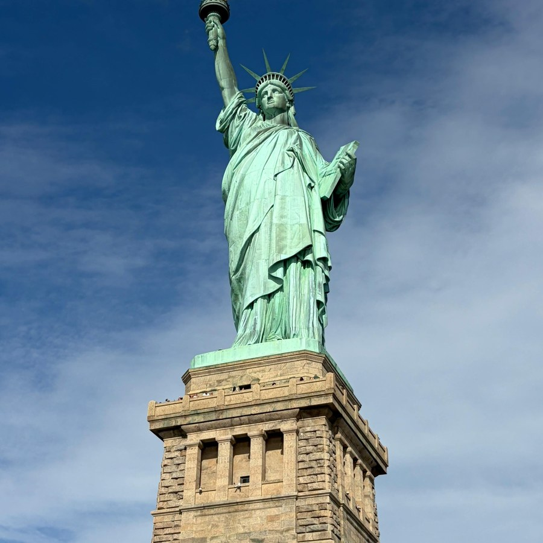
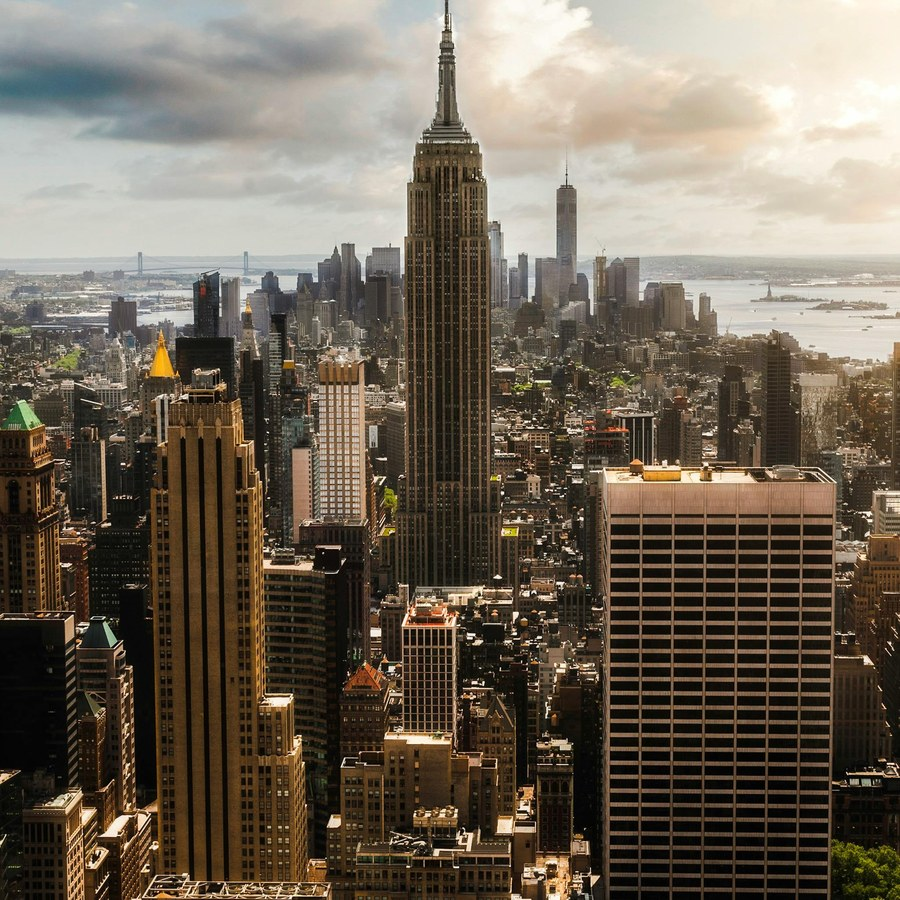
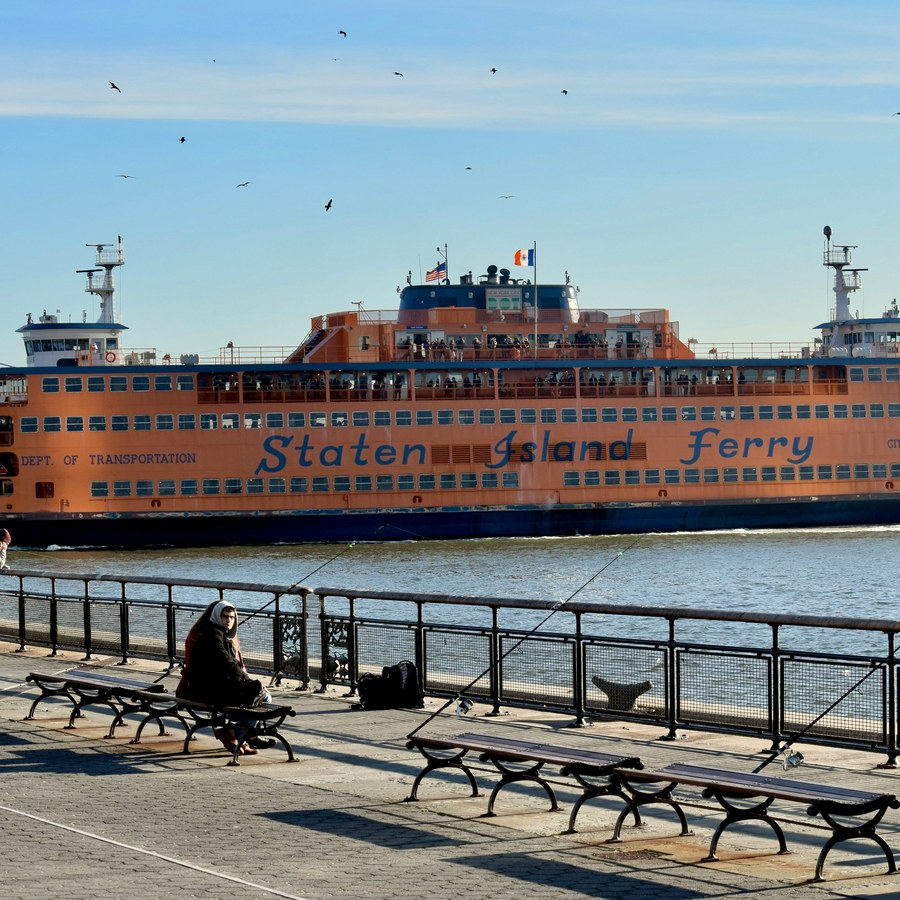
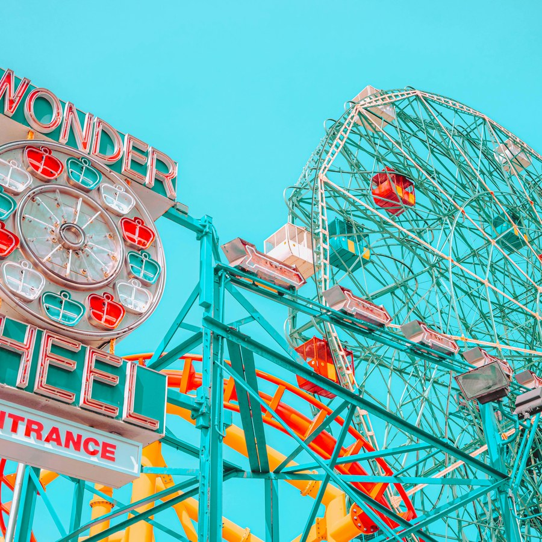
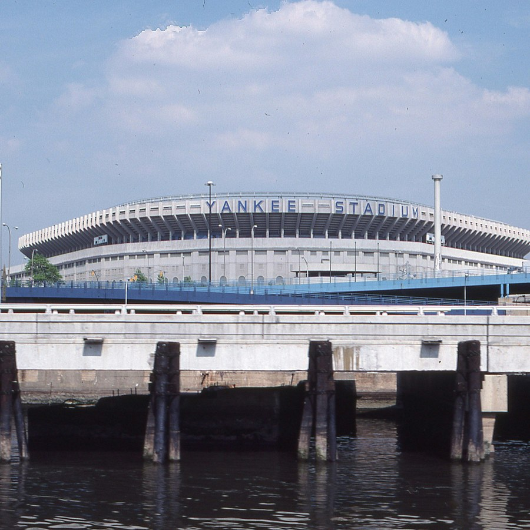
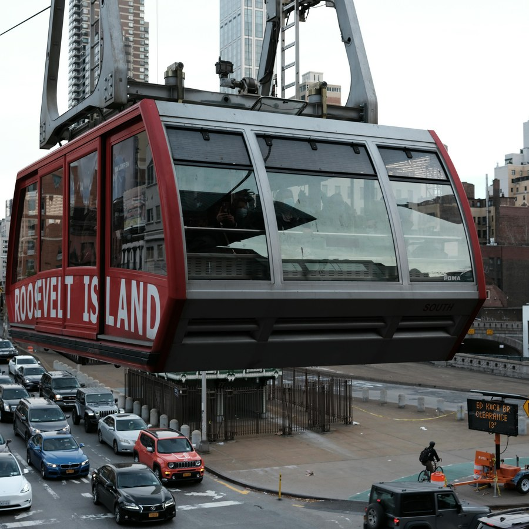

NYC Landmarks Virtual Tour
This site highlights some interesting landmarks across New York City's five boroughs.
Featured place
Roosevelt Island Tramway

Explore the city
Choose a landmark
Open a page to learn more, see the photo, and find directions.

Statue of Liberty
Empire State Building
Staten Island Ferry
Wonder Wheel
Yankee Stadium
Roosevelt Island Tramway